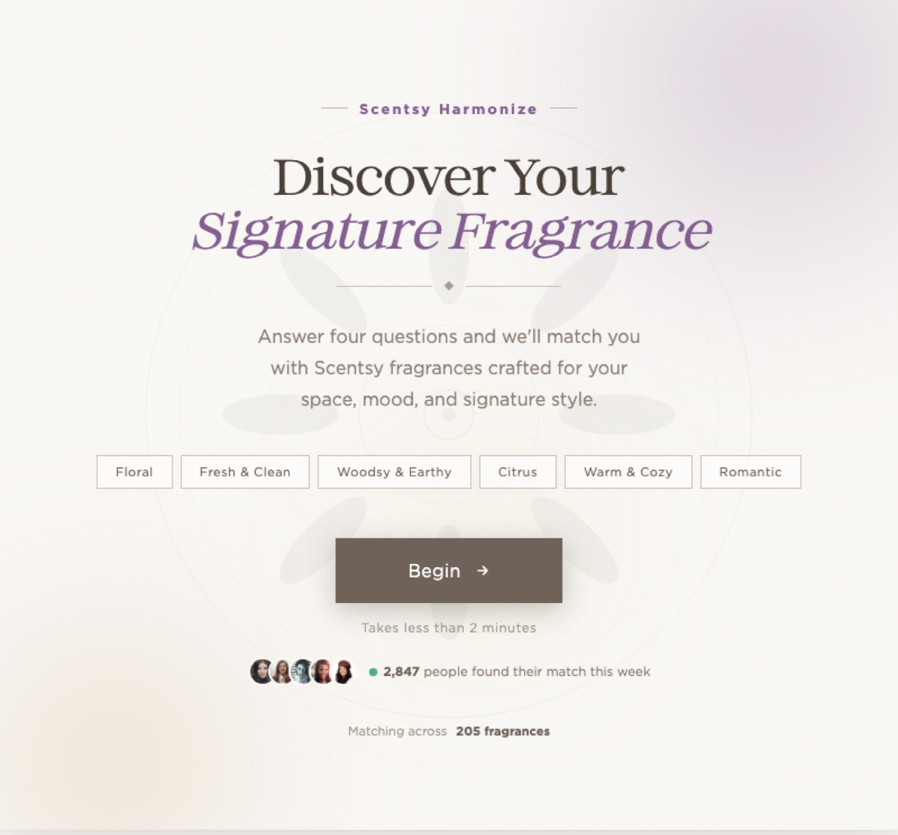
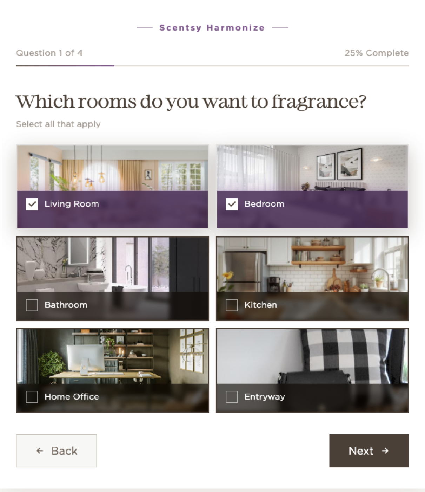
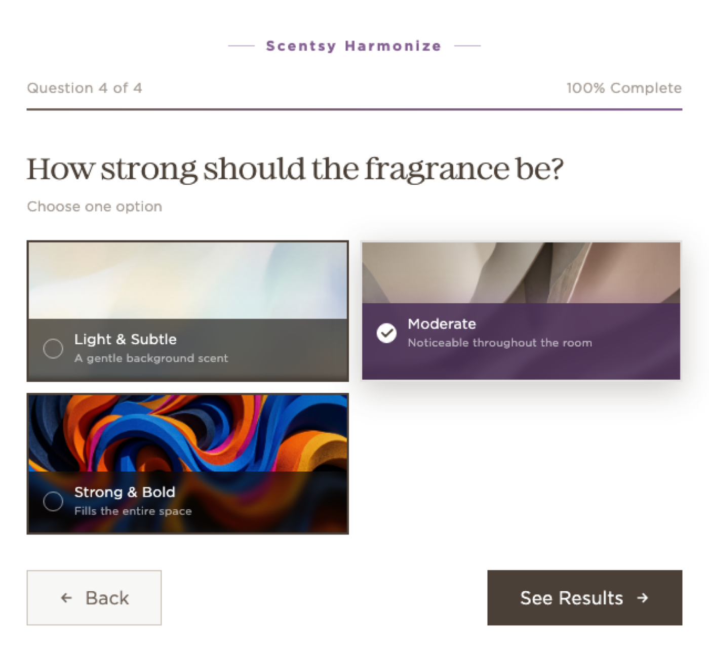
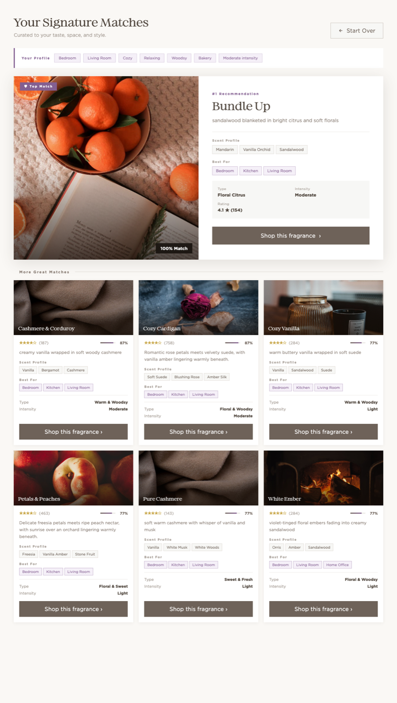

With 205 fragrances in the catalog, analysis paralysis sets in fast, especially for someone new to Scentsy. This concept matches people to a fragrance based on where they'll use it and how strong they want it, not on scent-family vocabulary they don't have yet.

Scentsy's catalog runs deep: 205 fragrances at the time of this concept, spanning families like floral, citrus, bakery, fresh, fruity, and woodsy. That's a strength for people who already know what they like. For someone newer to the brand, it's the classic choice-overload problem: a wall of options with no obvious starting point.
Browsing by scent family alone assumes a customer already has that vocabulary. It doesn't ask the questions that actually predict satisfaction: which room this is for, what mood they're going for, and (just as important) how strong they actually want it. A fragrance that's a great match on paper still fails if it's twice as strong as someone wanted in a small bedroom.
This is a personal concept exploration, not a shipped feature. It's built as a working prototype against real fragrance data to test whether a guided, needs-based match could replace open-ended browsing, not to report production results.

Instead of asking people to self-identify a scent family, the quiz starts with context they already know: which rooms they want to fragrance, and what ambiance they're after in each. Photography does the work that scent-family jargon can't: a living room card and a bathroom card look and feel different before a single word is read.
Rooms and ambiance are both multi-select, since most people are fragrancing more than one space with more than one mood in mind. Scent family comes third, as a lighter-weight preference layer once space and mood are already set.
The last question asks how strong the fragrance should be (light and subtle, moderate, or strong and bold), and it's the single heaviest-weighted signal in the whole match. A fragrance can score well on room and mood and still be the wrong pick if it fills a small bathroom when someone wanted something barely-there.
Behind the scenes, every one of the 205 fragrances carries tags for room fit, mood, scent family, and intensity. Each answer scores every fragrance against those tags, then ranks the full catalog:

The whole point of asking four questions is to earn the right to give one clear answer. The top-scoring fragrance is presented as a single, confident recommendation: full photography, scent notes, which rooms it's best for, and a match percentage, before anything else on the page. Six supporting alternatives follow underneath, each still carrying its own scent profile, best-for rooms, intensity, and rating, so the choice never feels like a black box.
A "Your Profile" recap sits above the results, restating the rooms, moods, families, and strength the person picked. It's a small thing, but it closes the loop: the recommendation visibly traces back to what they actually said, not a mystery algorithm.

As a concept, the biggest open question is the weighting itself. Right now the point values (intensity worth more than room, room worth more than a loose tag match) are my own informed judgment about what predicts satisfaction, not something validated against real purchase or return data. Before this could ship, I'd want to test that weighting against actual customer behavior, not just intuition.
I'd also want moderated usability sessions with people genuinely new to Scentsy, to see whether four questions is the right number, and whether "ambiance" language (cozy, energizing, romantic) actually maps to how people describe what they want, or whether it needs simpler words.
If you're looking for a senior UX leader who runs on data, ships with conviction, and doesn't confuse activity with impact. Let's talk.
iamgaryengel@gmail.com →